Arm AI Optimization Challenge 2026 · Track 2 — Cloud AI
The agent proposes.
The silicon decides.
Every other submission runs a model on Arm. Armsmith makes everyone else’s repo fast on Arm — and refuses to lie about the numbers.
LLM planner → proposes · REPRODUCE GATE (median-of-N · MAD noise band · output-hash equality) → the only thing allowed to claim
SDOT 0 → 1$ armsmith diagnose --replay fixtures/replays/scenario_ragserve fingerprint lscpu → dotprod / i8mm / SVE / SVE2 / BF16 / SME routing scan 13-rule aarch64 pack → findings on ragserve plan 6 candidate fixes queued — the planner proposes; it cannot claim gate median-of-N · MAD noise band (k=3) · output-hash equality KEEP × 4 Δ outside noise band · outputs hash-equal DROP × 1 inside noise band — refused, reported DROP × 1 output-hash mismatch — refused, reported report signed ed25519 · canonical-JSON sha256 · raw samples embedded $ armsmith verify fixtures/replays/scenario_ragserve/report.json VERIFY OK — every statistic recomputed from the embedded raw samples
SDOT 0 → 1, −86.5% kernel time on a Neoverse-N2 runner.§01 · the problem
The Graviton lore nobody has.
Arm64 cloud — Graviton, Ampere, Axion — is reported, per cloud vendors’ published price-performance benchmarks, to run AI inference 20–40% cheaper per unit of throughput — market context, not a number Armsmith measures. Capturing it takes performance-engineering lore almost nobody carries around:
A solo founder’s AWS bill doubles overnight when her RAG service outgrows its instance. The Graviton migration guide is 40 pages of compiler flags she doesn’t understand — and her next invoice lands in 9 days. — the seed scenario Armsmith is forged against
Teams either never migrate — or migrate and silently leave 2–3× on the table. Arm’s own Learning Paths teach a human to fix this by hand. Nothing automates the loop. Armsmith does — without ever being allowed to grade its own homework.
§02 · the trust inversion
Any agent can propose fixes.
Almost none can prove them.
Armsmith inverts the trust. The LLM planner proposes; only the reproduce gate can claim. A fix that can’t clear the noise band — or changes the output — is deleted by the tool itself and reported as refused. Never hidden.
$ armsmith verify fixtures/replays/scenario_ragserve/report.json VERIFY OK $ vi report.json # change ONE digit in any "samples" array $ armsmith verify fixtures/replays/scenario_ragserve/report.json VERIFY FAILED
Reproduce gate · armsmith.gate
Median-of-N runs, a scaled-MAD noise band k·√(smad_a²+smad_b²) with k=3, and
output-hash equality. In-band deltas are reported as no change — never as wins.
Tamper-evident reports · armsmith.report
Canonical-JSON sha256 content addressing plus an ed25519 signature. armsmith verify
recomputes every statistic and gate verdict from the embedded samples — tamper one digit, it goes red.
ISA witness · armsmith.witness
A before/after objdump count of SDOT / UDOT / SMMLA / USMMLA — e.g.
dotprod 0 → 4 — deterministic proof the Arm kernel path is actually emitted.
“Wall-clock can be argued with; emitted instructions cannot.”
§03 · the loop
Diagnose → gate → signed report → PR.
One command walks a repo from “slow on aarch64” to a pull request in which every surviving fix carries its own evidence — and every refused fix carries its reason.

-
Host fingerprint lscpu → ISA routing
dotprod / i8mm / SVE / SVE2 / BF16 / SME detection decides which fixes are even eligible.
-
13-rule scan static + recorded probes
AST, Dockerfile and CI analysis plus recorded runtime probes surface aarch64 anti-patterns R1–R13.
-
Planner orders fixes proposes — cannot claim
Deterministic fallback planner today; the Claude tool-use loop is an honest
TODO(S1). -
REPRODUCE GATE the only voice that counts
Keep only what lands outside the noise band and keeps outputs hash-equal. Everything else: dropped, with a machine-readable reason.
-
Signed report → PR ed25519 + sha256 · dry-run
An evidence table per surviving fix — metric · before · after · Δ · noise band — plus the drop log. PR rendering is dry-run today; posting lands at S1.
armsmith scan
armsmith diagnose
armsmith witness
armsmith verify
armsmith pr
armsmith ci
armsmith rules export
§04 · the receipts
Refusal is a feature.
On the ragserve seed, six candidate fixes entered the gate.
This counter is the whole brand — and the last cell is the point:
candidate fixes queued by the planner on the seed repo.
outside the noise band, outputs hash-equal — allowed into the PR.
1 inside the noise band · 1 output-hash mismatch. Deleted by the tool, reported in full.
every statistic re-derivable from raw samples via armsmith verify.
What we refuse to claim (yet)
- A throughput multiplier for your model — not claimed. What is measured is one int8 microkernel on a Neoverse-N2 runner (
SDOT 0 → 1, −86.5%); it proves the gate works on real silicon, not that your workload gets faster. The honest number is the one you run on your own hardware.measured ≠ extrapolated - All replay data is synthetic — labeled
"synthetic": trueat every layer; every loader refuses unlabeled measurement data.by design - Live perf/PMU capture · llama-bench · PR posting · the Claude planner loop — deferred, marked in code, exit non-zero instead of faking output.TODO(S1)
Anything that isn’t on the receipts doesn’t get claimed. That discipline is the product.
§05 · the artifacts
Built to be taken.
Every piece works standalone of the CLI — migration knowledge for the whole x86 → Arm community, not just this repo.
migration templates
13 x86 → Arm migration templates
armsmith rules export --format md renders one card per rule — anti-pattern ·
paste-able before→after diff · fix · citation — reusable on any repo. 12 of 13 carry a
diff; R13 is diagnostic and carries none rather than an invented one. Add a 14th rule
with one YAML descriptor, one detector and one import — the engine itself doesn't change.
cites an Arm Learning Path — 10 of 13; the rest cite the canonical upstream doc.
one command, no clone
On PyPI — and it records your machine
uvx armsmith scan . runs the aarch64 anti-pattern scan on any repo with nothing
installed. armsmith record then captures a real bundle from your own host — manifest
"synthetic": false — so the probe rules diagnose your code, not our fixtures.
Published from CI by Trusted
Publishing, sdist + wheel attached to every release.
public schema
Signed-report JSON schema
report.schema.json — JSON Schema draft 2020-12, CI-validated. Build your own
viewer or CI gate against it without trusting our rendering.
importable modules
The methodology, as a library
from armsmith.benchstats import compare — plus gate, report
and witness. Median-of-N / MAD / noise-band statistics with no CLI required.
drop-in ci gate
arm64 CI action
A composite GitHub Action (action.yml) runs the same reproduce gate on free
native-arm64 hosted runners (ubuntu-24.04-arm) as an exit-code perf-regression twin.
§06 · run the proof
Two minutes. Zero Arm hardware. Zero trust required.
Every command below runs on any x86 laptop — no Arm box, no network beyond
pip. All exit 0. The tamper step goes red on purpose.
# scan any repo with no install at all — armsmith is on PyPI uvx armsmith scan . # record a REAL bundle from your own machine, then diagnose your own repo # (manifest declares "synthetic": false — nothing here is ours) armsmith record . --out ./bundle --python .venv/bin/python armsmith diagnose --replay ./bundle # or clone, to reproduce the full gate against the replay bundles git clone https://github.com/edycutjong/armsmith && cd armsmith python3 -m venv .venv && source .venv/bin/activate pip install -e '.[dev]' python -m pytest -q # 447 passing, fully offline armsmith scan fixtures/replays/scenario_ragserve # static R1/R4/R12 — zero hardware armsmith diagnose --replay fixtures/replays/scenario_ragserve # full gate: 4 kept, 2 dropped armsmith witness fixtures/witness/objdump_before.txt fixtures/witness/objdump_after.txt # ISA proof: 0 → 4 dotprod armsmith verify fixtures/replays/scenario_ragserve/report.json # → VERIFY OK armsmith ci --replay fixtures/replays/scenario_ragserve # → CI GATE PASSED python scripts/verify_offline.py # → ALL CHECKS PASSED — honest & offline
Then try to cheat: the 20-second trust proof
Open report.json, change one digit in any samples
array, re-run armsmith verify. The arithmetic is independently re-derivable —
editing a number without re-running the measurement is detectable.
$ vi fixtures/replays/scenario_ragserve/report.json # one digit $ armsmith verify fixtures/replays/scenario_ragserve/report.json VERIFY FAILED
On native Arm64 — Graviton c7g/c8g, Ampere, Axion,
or a GitHub ubuntu-24.04-arm runner — the same commands run identically, and
armsmith doctor --offline shows the host’s dotprod / i8mm / SVE routing. CI already runs the
full suite on a native-arm64 + x86 matrix. Live capture (--target ssh://…) is the S1 path;
Armsmith never fabricates a hardware number.
§07 · faq
Honest answers.
The same standard as the tool: if it isn’t provable, it isn’t claimed.
Q1Do I need Arm hardware to validate any of this?
No. The judge quickstart runs on any x86 laptop in about two minutes, fully offline
beyond pip: 447 tests, the static scan, the full replay reproduce gate, the ISA witness,
verify, and the CI twin — all exit 0 with no Arm box and no network.
Q2Are the performance numbers real hardware measurements?
One leg is, and it is the one that matters. On every push, a GitHub-hosted
ubuntu-24.04-arm runner (host Neoverse-N2, gcc 13.3.0) compiles the same
int8 dot-product kernel twice — differing only in -march — disassembles both, and measures them:
SDOT 0 → 1, median 0.059975 s → 0.008123 s, −86.5% (7.4×), outside a
±0.000144 s noise band, output hashes identical, gate verdict keep. The report is signed and
every statistic is re-derived from the embedded raw samples.
The rest of the numbers come from replay bundles labeled "synthetic": true at every
layer, and the loaders refuse unlabeled measurement data — so the two can never be confused for one another.
Armsmith also refuses to run bench-live on a non-aarch64 host rather than
manufacture a result.
Q3What happens to a fix that can’t be proven?
The tool deletes it and says so. On the ragserve seed, 6 candidate fixes
entered the reproduce gate; 4 survived, 1 was refused for landing inside the noise band and 1 for an
output-hash mismatch. Refusals ship in the report and the PR body — never hidden.
Q4Can’t I just edit the report to a nicer number?
Try it — that’s the 20-second demo. report.json embeds the raw samples
beside every statistic; armsmith verify recomputes every stat and gate verdict from those
samples. Change one digit and it prints VERIFY FAILED.
Q5What can I reuse without adopting the CLI?
Four artifacts: the 13 x86 → Arm migration templates (10 citing Arm Learning Paths),
the public signed-report JSON schema (draft 2020-12, CI-validated), the importable
benchstats / gate / report / witness modules, and a
drop-in composite GitHub Action that runs the gate on free native-arm64 runners. A 14th rule is one
YAML descriptor — no core changes.
Q6License, track, and what’s with the two names?
MIT, end to end. Built for the Arm AI Optimization Challenge on Devpost — Track 2, Cloud AI — where it’s submitted under the product name Armsmith. The tool, the CLI and this site are Armsmith: the agent that forges your repo for Arm.
§08 · your move
Try to fake a number.
Clone the repo, tamper with the report, and watch VERIFY FAILED catch you in one second. Then read the 13 migration templates and make your own repo fast on Arm.